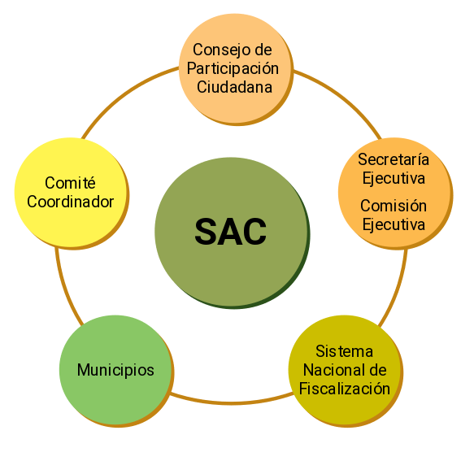

Programa de Trabajo 2019 del Comité Coordinador
Descargar
Introducción
La corrupción es el abuso y mal uso de funciones de poder que corre por redes de protección, de complicidad y de opacidad que involucra a entes públicos y su relación con los privados.
Para enfrentar la corrupción, es de vital importancia influir a través de un sistema, como mecanismo para homologar reglas, procedimientos de operación para prevenir, detectar, investigar y sancionar faltas administrativas graves y actos de transición.
Para ello, se crean los Sistemas Nacional y Estatales Anticorrupción, impulsados por la Sociedad Civil, que coordinan a las áreas públicas que tienen el control interno de la gestión gubernamental y de quienes persiguen las faltas, los delitos y los sancionan, bajo la dirección de un cuerpo ciudadano.
El Comité Coordinador del Sistema Estatal Anticorrupción establecido en el artículo 8 de la Ley del Sistema Anticorrupción del Estado de Coahuila de Zaragoza, es la instancia responsable de establecer mecanismos de coordinación entre los integrantes del Sistema Estatal, y de éste con el Sistema Nacional, y tendrá bajo su encargo el diseño, promoción y evaluación de políticas públicas locales de prevención y combate a la corrupción.
Dicho Comité estará integrado por:
- Quien Preside el Consejo de Participación Ciudadana, quien lo presidirá;
- La o el Titular de la Auditoría Superior del Estado;
- La o el Titular de la Fiscalía Especializada en Delitos por Hechos de Corrupción del Estado;
- La o el Titular de la Secretaría de Fiscalización y Rendición de Cuentas;
- La o el Presidente del Consejo de la Judicatura;
- La o el Presidente del Instituto Coahuilense de Acceso a la Información Pública; y
- La o el Presidente del Tribunal de Justicia Administrativa de Coahuila de Zaragoza.
A fin de contar con una ruta de trabajo mediante la cual el Comité Coordinador lleve a cabo sus funciones, se presenta el presente Plan de Trabajo 2019, que formará parte de las acciones correspondientes a las políticas integrales en materia de prevención, control y disuasión de faltas administrativas y hechos de corrupción; así como de fiscalización y control de recursos públicos; de apoyo a la generación de una metodología para medir y dar seguimiento, con base en indicadores; las bases y principios para la efectiva coordinación de las autoridades de los órdenes de gobierno de competencia en los temas mencionados; así como la base para el informe anual que contenga los avances y resultados del ejercicio de las funciones y de la aplicación de políticas y programas en la materia.
Este Plan de Trabajo, se divide en cuatro apartados:
I. marco jurídico;
II. misión y visión;
III. objetivos generales, estratégicos y líneas de acción.
Con el Plan de Trabajo 2019 del Comité Coordinador, se pretende generar la confianza de la ciudadanía, y a su vez, tener incidencia en el diseño, implementación y evaluación de la política integral anticorrupción del Estado de Coahuila de Zaragoza.
I. Marco Jurídico
La promulgación de la Reforma Constitucional Federal que crea el Sistema Nacional Anticorrupción (SNA), y la Reforma Constitucional del Estado de Coahuila de Zaragoza, que crea su correspondiente Ley estatal, representan un avance histórico en la lucha contra la corrupción.
Las reformas constitucionales en materia anticorrupción, se publicaron en el Diario Oficial de la Federación (DOF) en mayo de 2015, y son la base que da sustento a toda la legislación secundaria en la materia.
En julio de 2016 fueron publicadas en el DOF las leyes secundarias que dan vida al SNA.
Mientras que la Ley del Sistema Anticorrupción del Estado de Coahuila de Zaragoza, fue publicada en julio de 2017, es de orden público, de observancia general en el Estado, y tiene por objeto establecer las bases de coordinación entre las autoridades de todos los Entes Públicos del estado, para la integración, organización y funcionamiento del Sistema Estatal Anticorrupción, con el fin de prevenir, y sancionar las faltas administrativas, y los hechos de corrupción, así como investigar la fiscalización y control de recursos públicos, de conformidad con lo que establece la Constitución Política de los Estados Unidos Mexicanos, la Ley General del Sistema Nacional Anticorrupción, la Constitución Política del Estado de Coahuila de Zaragoza, y demás disposiciones legales aplicables.
Los objetivos de la Ley del Sistema Anticorrupción del Estado de Coahuila de Zaragoza son:
- Integrar al Estado de Coahuila de Zaragoza al Sistema Nacional Anticorrupción;
- Establecer las bases de coordinación entre los organismos que integran el Sistema Estatal con los municipios del estado;
- Establecer las bases mínimas para la emisión de políticas públicas integrales en la prevención y combate a la corrupción, así como en la fiscalización y control de los recursos públicos;
- Establecer las directrices básicas que definan la coordinación de las autoridades competentes para la generación de políticas públicas en materia de prevención, detección, control, sanción, disuasión y combate a la corrupción;
- Regular la organización y funcionamiento del Sistema Estatal, su Comité Coordinador y su Secretaría Ejecutiva, así como establecer las bases de coordinación entre sus integrantes;
- Establecer las bases, principios y procedimientos para la organización y funcionamiento del Consejo de Participación Ciudadana;
- Establecer las bases y políticas para la promoción, fomento y difusión de la cultura de integridad en el servicio público, así como de la rendición de cuentas, de la transparencia, de la fiscalización y del control de los recursos públicos;
- Establecer las bases de coordinación del Sistema Estatal con el Sistema Nacional Anticorrupción;
- Armonizar las bases mínimas que para la creación e implementación de sistemas electrónicos establece la Ley General del Sistema Nacional Anticorrupción para el suministro, intercambio, sistematización y actualización de la información que generen las instituciones competentes en el estado y sus municipios con las atribuciones y capacidades del estado y sus municipios.
El Sistema Anticorrupción del Estado de Coahuila de Zaragoza, coordina a las autoridades estatales y municipales, para que prevengan, investiguen y sancionen las faltas administrativas y los hechos de corrupción.
Coordinación entre instituciones y órdenes de gobierno

El Comité Coordinador constituye el núcleo del SAC. Como función principal, este órgano tiene que establecer mecanismos eficientes de coordinación y colaboración entre las instancias que forman parte del sistema. La trascendencia de este órgano recae en la posibilidad de encauzar las diferentes funciones de los siete miembros, para construir un verdadero sistema generador de política de Estado.
El Comité Coordinador en Coahuila de Zaragoza está integrado por:
- La o el Presidente del Consejo de Participación Ciudadana, quien lo presidirá;
- La o el Titular de la Auditoría Superior del Estado;
- La o el Titular de la Fiscalía Especializada en Delitos por Hechos de Corrupción del Estado;
- La o el Titular de la Secretaría de Fiscalización y Rendición de Cuentas;
- La o el Presidente del Consejo de la Judicatura;
- La o el Presidente del Instituto Coahuilense de Acceso a la Información Pública; y
- La o el Presidente del Tribunal de Justicia Administrativa de Coahuila de Zaragoza.
Por otra parte, se crea el Consejo de Participación Ciudadana, como órgano rector del sistema y canal de interacción entre la sociedad civil y las instituciones de gobierno, el cual se integra por cinco ciudadanos de probidad y prestigio que se hayan destacado por su contribución a la transparencia, la rendición de cuentas o el combate a la corrupción.
La introducción de este órgano al Sistema Anticorrupción, constituye la posibilidad por parte de los ciudadanos de dirigir los esfuerzos contra la corrupción.
La Constitución Política del Estado de Coahuila de Zaragoza y la Ley del Sistema Anticorrupción del Estado de Coahuila de Zaragoza, dotaron a dicho Consejo a través de sus cinco representantes y a quien preside el Comité, del poder de dirigir los esfuerzos en contra de la corrupción y de liderar el sistema.
El Comité Coordinador tiene las siguientes facultades:
- Elaborar su programa anual de trabajo;
- Establecer las bases y principios para la efectiva coordinación de sus integrantes;
- El diseño, aprobación y promoción de la política estatal en la materia, así como su evaluación periódica, ajuste y modificación. Esta política deberá atender por lo menos la prevención, el fomento a la cultura de la legalidad, la debida administración de los recursos públicos, la adecuada administración de riesgos y la promoción de la cultura de integridad en el servicio público;
- Aprobar la metodología de los indicadores para la evaluación a que se refiere la fracción anterior, con base en la propuesta que le someta a consideración la Secretaría Ejecutiva;
- Tener acceso a la información pública necesaria, adecuada y oportuna para el mejor desempeño de sus funciones;
- Establecer las bases para la determinación de perfiles de las áreas de riesgo de los distintos Entes Públicos;
- Conocer el resultado de las evaluaciones que realice la Secretaría Ejecutiva y, con base en las mismas, acordar las medidas a tomar o la modificación que corresponda a las políticas integrales;
- Requerir información a los Entes Públicos respecto del cumplimiento de la política estatal y las demás políticas integrales implementadas; así como recabar datos, observaciones y propuestas requeridas para su evaluación, revisión o modificación de conformidad con los indicadores generados para tales efectos;
- Establecer un Sistema Estatal de Información que integre y conecte los diversos sistemas electrónicos que posean datos e información necesaria para que el Comité́ Coordinador pueda establecer políticas integrales, metodologías de medición y aprobar los indicadores necesarios para que se puedan evaluar las mismas;
- Establecer un Sistema Estatal de Información que integre y conecte los diversos sistemas electrónicos que posean datos e información necesaria para que las autoridades competentes tengan acceso a los sistemas estatal de información, sin detrimento de los lineamientos que para estos efectos emita el Comité Coordinador del Sistema Nacional Anticorrupción;
- Celebrar convenios de coordinación, colaboración y concertación necesarios para el cumplimiento de los fines del Sistema Estatal;
- La emisión de un informe anual que contenga los avances y resultados del ejercicio de sus funciones y de la aplicación de políticas y programas en la materia, los riesgos identificados, los costos potenciales generados y los resultados de sus recomendaciones, en los cuales se incluirá las respuestas de los Entes Públicos. Dicho informe será el resultado de las evaluaciones realizadas por la Secretaría Ejecutiva y será aprobado por la mayoría de los integrantes del Comité Coordinador, los cuales podrán realizar votos particulares, concurrentes o disidentes, sobre el mismo y deberán ser incluidos dentro del informe anual;
- Emitir recomendaciones públicas no vinculantes ante las autoridades respectivas y darles seguimiento, con el objeto de garantizar la adopción de medidas dirigidas al fortalecimiento institucional para la prevención de faltas administrativas y hechos de corrupción, así como para mejorar el desempeño del control interno;
- El seguimiento y la aplicación a nivel local de los mecanismos de suministro, intercambio, sistematización y actualización de la información, elaborados por el Sistema Nacional que sobre estas materias generen las instituciones competentes de los órdenes de gobierno; y,
- Las demás que le atribuye la ley, así como las señaladas en otras leyes y disposiciones aplicables.
En tanto que la Secretaría Ejecutiva del Sistema Estatal, es un organismo descentralizado, no sectorizado, con personalidad jurídica y patrimonio propio, con autonomía técnica y de gestión. El órgano de gobierno de la Secretaría Ejecutiva, estará integrado por los miembros del Comité Coordinador y será presidido por el Presidente del Consejo de Participación Ciudadana.
El objetivo de la Secretaría Ejecutiva es fungir como órgano de apoyo técnico del Comité Coordinador, a efecto de proveerle la asistencia técnica, así como los insumos necesarios para el desempeño de sus atribuciones.
Corresponde a Secretario Técnico ejercer la dirección de la Secretaría Ejecutiva, por lo que contará con las facultades previstas en la Ley de Entidades Paraestatales del Estado de Coahuila de Zaragoza.
El Secretario Técnico adicionalmente tendrá, entre otras, las siguientes facultades:
- Actuar como secretario del Comité Coordinador;
- Ejecutar y dar seguimiento a los acuerdos y resoluciones del Comité Coordinador y del órgano de gobierno;
- Elaborar y certificar los acuerdos que se tomen en el Comité Coordinador y en el órgano de gobierno y el de los instrumentos jurídicos que se generen en el seno del mismo, llevando el archivo correspondiente de los mismos en términos de las disposiciones aplicables;
- Elaborar los anteproyectos de metodologías, indicadores y políticas integrales para ser discutidas en la Comisión Ejecutiva y, en su caso, sometidas a la consideración del Comité Coordinador;
- Proponer a la Comisión Ejecutiva las evaluaciones que se llevarán a cabo de las políticas integrales anticorrupción
- Realizar el trabajo técnico para la preparación de documentos que se llevarán como propuestas de acuerdo al Comité Coordinador, al órgano de gobierno y a la Comisión Ejecutiva;
- Preparar el proyecto de calendario de los trabajos del Comité Coordinador, del órgano de gobierno y de la Comisión Ejecutiva;
- Elaborar los anteproyectos de informes del Sistema Estatal, someterlos a la revisión y observación de la Comisión Ejecutiva y remitirlos al Comité Coordinador para su aprobación;
- Realizar estudios especializados en materias relacionadas con la prevención, detección y disuasión de hechos de corrupción y de faltas administrativas, fiscalización y control de recursos públicos por acuerdo del Comité Coordinador;
- Administrar el Sistema Estatal de Información que establecerá el Comité Coordinador, en términos de esta ley y asegurar el acceso a las mismas de los miembros del Comité Coordinador y la Comisión Ejecutiva
- Integrar los sistemas de información necesarios para que los resultados de las evaluaciones sean públicos y reflejen los avances o retrocesos en la política estatal anticorrupción, y
- Proveer a la Comisión Ejecutiva los insumos necesarios para la elaboración de las propuestas a que se refiere la presente ley. Para ello, podrá solicitar la información que estime pertinente para la realización de las actividades que le encomienda esta ley, de oficio o a solicitud de los miembros de la Comisión Ejecutiva.
La Comisión Ejecutiva
La Comisión Ejecutiva está integrada por el Secretario Técnico, y el Consejo de Participación Ciudadana, con excepción del miembro que funja en ese momento como Presidente del mismo.
La Comisión Ejecutiva tendrá a su cargo la generación de los insumos técnicos necesarios para que el Comité Coordinador realice sus funciones, por lo que elaborará las siguientes propuestas para ser sometidas a la aprobación de dicho comité:
- Las políticas integrales en materia de prevención, control y disuasión de faltas administrativas y hechos de corrupción, así como de fiscalización y control de recursos públicos;
- La metodología para medir y dar seguimiento, con base en indicadores aceptados y confiables, a los fenómenos de corrupción, así como a las políticas integrales a que se refiere la fracción anterior;
- Los informes de las evaluaciones que someta a su consideración el Secretario Técnico respecto de las políticas a que se refiere este artículo;
- Los mecanismos de suministro, intercambio, sistematización y actualización de la información en materia de fiscalización y control de recursos públicos, de prevención, control y disuasión de faltas administrativas y hechos de corrupción;
- Las bases y principios para la efectiva coordinación de las autoridades de los órdenes de gobierno en materia de fiscalización y control de los recursos públicos;
- El informe anual que contenga los avances y resultados del ejercicio de las funciones y de la aplicación de las políticas y programas en la materia;
- Las recomendaciones no vinculantes que serán dirigidas a las autoridades que se requieran, en virtud de los resultados advertidos en el informe anual, así como el informe de seguimiento que contenga los resultados sistematizados de la atención dada por las autoridades a dichas recomendaciones, y
- Los mecanismos de coordinación con el Sistema Nacional.
La Comisión Ejecutiva celebrará sesiones ordinarias y extraordinarias que serán convocadas por el Secretario Técnico, en los términos que establezca el Reglamento Interior de la Secretaría Ejecutiva.
La Comisión Ejecutiva podrá invitar a sus sesiones a especialistas en los temas a tratar, los cuales contarán con voz, pero sin voto, mismos que serán citados por la o el Secretario Técnico.
Por las labores que realicen como miembros de la Comisión Ejecutiva, los integrantes del Consejo de Participación Ciudadana no recibirán contraprestación adicional a la que se les otorgue por su participación como integrantes del Consejo de Participación Ciudadana, de conformidad con lo establecido en esta ley.
La Comisión Ejecutiva podrá, en el ámbito de sus atribuciones, emitir los exhortos que considere necesarios a las autoridades integrantes del Comité Coordinador, a través del Secretario Técnico.
II. Misión y visión del Comité Coordinador
Misión
Somos un Órgano Rector que diseña, promociona y evalúa las políticas públicas integrales para la prevención y el combate a la corrupción, a través del establecimiento de mecanismos eficaces de coordinación y colaboración entre los integrantes del Sistema Estatal Anticorrupción alineado al Sistema Nacional.
Visión
Ser un Órgano Rector garante en la adopción de medidas para el fortalecimiento Institucional en la prevención, detección y sanción, que permitan erradicar la opacidad, los actos ilícitos y de corrupción e incrementen la confianza de los ciudadanos respecto a las instituciones.
III. objetivos generales, estratégicos y líneas de acción
Objetivo estratégico 1
Fortalecer los mecanismos de coordinación y de toma de decisiones al interior del Comité Coordinador y de los integrantes del Sistema Anticorrupción, que permitan alcanzar los objetivos planteados en la Constitución Política del Estado de Coahuila de Zaragoza, la Ley del Sistema Anticorrupción del Estado de Coahuila de Zaragoza y demás disposiciones legales aplicables.
Líneas de acción:
1.1. Garantizar la aplicación de los lineamientos y reglas de funcionamiento del Comité Coordinador y de sus instituciones integrantes, para la toma de decisiones consensada que redunde en una mejor prevención, detección, control, sanción, disuasión y combate a la corrupción.
1.2. Desarrollar proyectos estratégicos que promuevan la participación activa de los municipios en el Sistema Anticorrupción, atendiendo a las características de cada municipio.
1.3. Fortalecer los esquemas de colaboración con los demás órganos del Sistema Nacional y los sistemas locales.
Objetivo estratégico 2
Fortalecer los esfuerzos coordinados en materia de capacitación, cooperación, promoción y difusión del Sistema Estatal Anticorrupción.
Líneas de acción:
2.1. Implementar un programa de promoción, difusión y fomento de la cultura de la legalidad, acceso a la información y combate a la corrupción. Este programa debe incluir la participación conjunta de todas las instituciones representadas en el Comité Coordinador.
2.2. Promover e impulsar la capacitación permanente sobre la cultura de la legalidad y transparencia en las instituciones encargadas de los temas anticorrupción dirigido a funcionarios públicos de todos los niveles, así como en la sociedad civil.
2.3. Fomentar la participación ciudadana por medio de convenios, programas y demás instrumentos jurídicos que coadyuven en la colaboración permanente dirigidos a la prevención, control y combate de la corrupción.
2.4. Implementar estrategias de comunicación y capacitación de las entidades que integran el Sistema Anticorrupción del Estado.
2.5. Coadyuvar con las autoridades competentes en la promoción de la cultura de la transparencia, de la legalidad y el combate a la corrupción.
Objetivo estratégico 3
Desarrollar los instrumentos, estrategias y metodologías de seguimiento y evaluación de las políticas públicas de prevención, control y combate de la corrupción.
Líneas de acción:
3.1. Impulsar y colaborar en la elaboración e implementación de la Política Estatal Anticorrupción, así como evaluar y dar seguimiento al avance e impacto de los objetivos y metas establecidos.
3.2. Impulsar una agenda de trabajo estratégica del Comité del Sistema de Fiscalización en el Estado.
3.3. Promover los procesos, procedimientos, técnicas, criterios y estrategias, programas y normas profesionales en materia de auditoría y fiscalización, alineadas a las establecidas en el Sistema Nacional de Fiscalización.
3.4. Fortalecer las capacidades de los órganos internos de control por medio de una coordinación y capacitación constante.
Objetivo estratégico 4
Impulsar el uso de recursos tecnológicos para implementar los mecanismos de recopilación, sistematización, procesamiento, intercambio y actualización de información sobre corrupción.
Líneas de acción:
4.1. Colaborar y construir, con base en los lineamientos técnicos emitidos por el Sistema Nacional Anticorrupción, el Sistema Estatal de Información, el cual se comunicará con la Plataforma Digital Nacional.
4.2. Contar con mecanismos interinstitucionales para estudio y desarrollo de información sobre temas relacionados con la prevención, control y combate a la corrupción.
4.3. Elaborar una propuesta para el desarrollo de un sistema de indicadores claves para la evaluación de los niveles, efectos y alcances de la corrupción en el Estado.
Objetivo estratégico 5
Impulsar, generar e implementar políticas públicas en materia de denuncia, investigación y sanción de la corrupción.
Líneas de acción:
5.1. Implementar programas de capacitación para las y los servidores públicos del estado de Coahuila de Zaragoza, en materia de corrupción y responsabilidades administrativas.
5.2. Diseñar e implementar una política pública que incluya la creación de una plataforma digital única de denuncia, queja o envío de información referente a posibles actos de corrupción y faltas administrativas, la cual garantice la protección al denunciante, mediante el anonimato y a través de un formato ágil, gratuito y digitalmente seguro.
5.3. Recopilar y sistematizar con apoyo del Tribunal de Justicia Administrativa, a través de su Unidad Anticorrupción, los criterios que emita en la materia, esto a través del diseño e implementación de una matriz que incluya grados de avance o resolución de cada caso.
5.4. Diseñar e implementar políticas y medidas para la debida ejecución de las resoluciones que emitan las autoridades del Comité Coordinador, así como diseñar un sistema de seguimiento.
5.5. Implementación de un tablero de seguimiento del estado que guardan los expedientes o denuncias, de los procesos de responsabilidades por faltas administrativas y/o los delitos por hechos de corrupción que están en proceso de investigación, o que ya hayan sido judicializados, de conformidad a lo que dispone la Ley de Acceso a la Información Pública para el Estado de Coahuila de Zaragoza.
5.6. Diseñar e implementar un mecanismo para la presentación, por parte del Tribunal de Justicia Administrativa, de información de los expedientes de responsabilidades administrativas graves que se encuentran en trámite o que ya hayan causado estado, en apego a lo que señala la Ley de Acceso a la Información Pública para el Estado de Coahuila de Zaragoza.